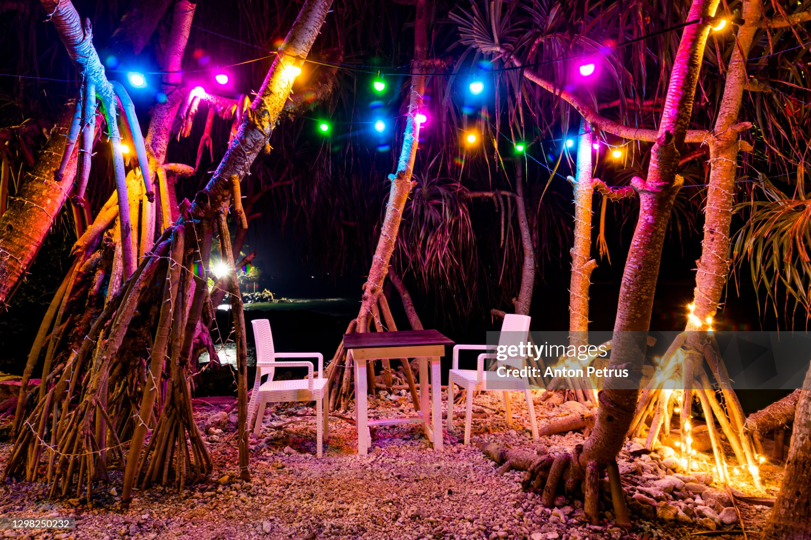
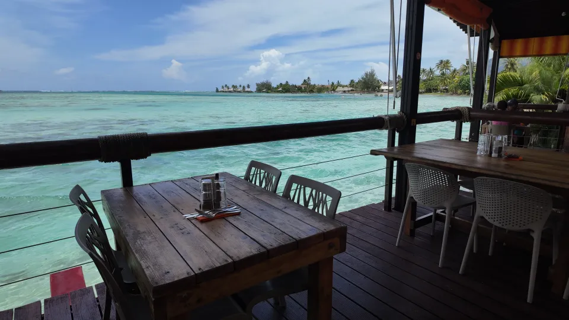
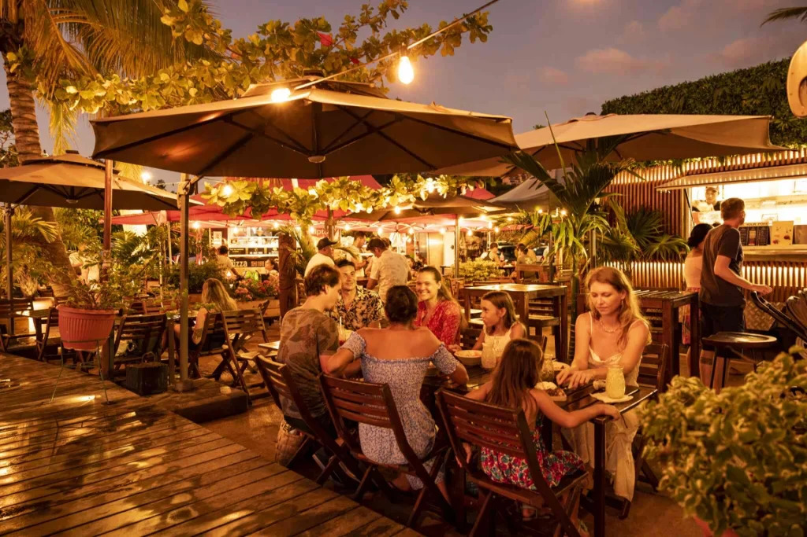
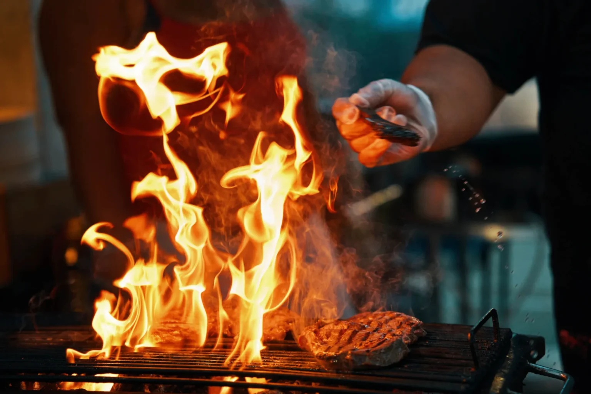
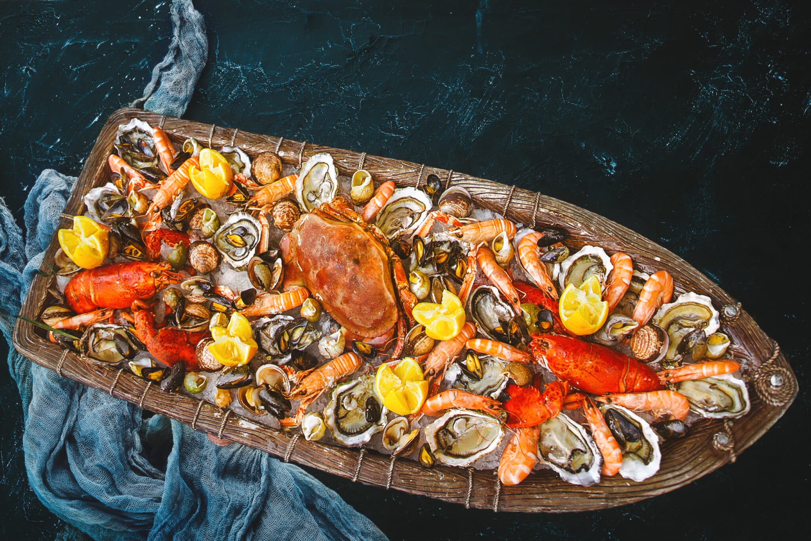

Savourer Tahiti
Une explosion de saveurs entre traditions ancestrales et influences du monde
Bars de bord de plage
Sirotez un cocktail exotique les pieds dans le sable blanc
Rien ne vaut l'expérience de siroter un cocktail exotique ou un jus de fruits frais pressés les pieds dans le sable blanc. Les bars de bord de plage à Tahiti offrent un cadre idyllique et une ambiance décontractée, idéale pour admirer le coucher de soleil sur l'océan Pacifique ou sur la silhouette de Moorea tout en dégustant des amuses-bouches locaux.

Choisissez votre ambiance !


Les Roulottes
Le cœur vibrant de la convivialité nocturne polynésienne
Incontournables de la vie nocturne polynésienne, les roulottes sont des food trucks locaux qui s'installent chaque soir sur les places publiques, notamment à la célèbre place Vai'ete de Papeete. On y partage de grandes tables conviviales pour déguster des portions très généreuses : du mythique poisson cru au lait de coco aux spécialités de chow mein, en passant par les steaks-frites sauce Roquefort.

Des plats sur le pouce ou préparés posément, il y en a pour tous les goûts !


Restaurants Traditionnels
Une immersion culinaire authentique à la découverte du four tahitien
Les restaurants traditionnels mettent à l'honneur le terroir polynésien et les méthodes de cuisson ancestrales. C'est l'endroit rêvé pour goûter au "mā'a tahiti", le repas traditionnel cuit à l'étouffée dans le four tahitien creusé dans la terre (le Ahima'a). Au menu : porc, taro, manioc, fe'i (bananes à cuire) et le fameux uru (fruit de l'arbre à pain).

La faune marine est mise à l'honneur !



Cuisines du Monde
Quand les saveurs internationales rencontrent le savoir-faire local
Tahiti est au carrefour des cultures, et sa table reflète ce métissage unique. La cuisine locale intègre avec brio de fortes influences de la gastronomie française et de la cuisine chinoise (héritée de la communauté Hakka). Les amateurs de sushis japonais, de pâtes italiennes ou de burgers américains trouveront également leur bonheur avec une touche locale subtile.

Tous les continents s'invitent à nos tables !